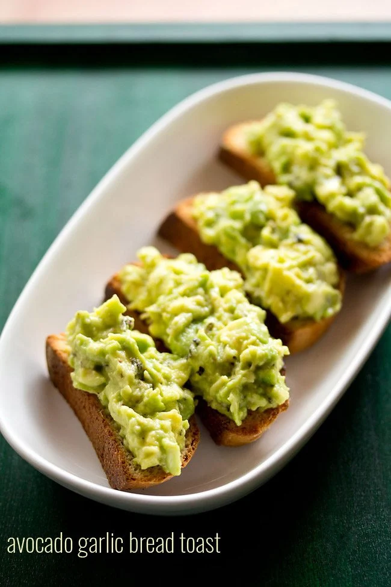

AvacadoToast

Description
Avocados are a must-have staple in my house. In fact, I usually buy 1 or 2 each week to use in all kinds of recipes. Also known as butter fruit, avocados (makhan phal) are a wonderfully fatty and flavorful ingredient thats great to include in both sweet and savory dishes.
Ingredients
- 8 to 10 slices garlic bread
- 1 tablespoon extra virgin olive oil
- 1 garlic clove
- 1 avocado
- 1 garlic clove
- 1/2 teaspoon dried oregano
- 1/4 teaspoon crushed black pepper
- 1/4 teaspoon lemon juice
- salt as required
Steps
- Firstly slice a garlic loaf or a french bread.
- Then heat a griddle or tawa or skillet. Place the loaf slices on it. Toast them on a low to medium flame.
- Whilst the bread is getting toasted, we prepare the avocado filling. Take an avocado. Rinse if you want. Then give a cut at the center moving around the entire avocado.
- We want the avocado in two halves. Remove the seed.
- With a spoon, scoop out the entire avocado flesh, which is like butter and gets removed easily
- Place the scooped avocado flesh on chopping board and then chop. Or you can mash the avocado pulp in a bowl.
- Add the chopped avocado in a mixing bowl. Also add 1 small to medium garlic clove (finely chopped or minced)
- Season with ½ teaspoon oregano (or add as required), crushed black pepper (as required), salt and a few drops of lemon juice. The lemon juice prevents the discoloration.
- Mix Well and keep aside
- Once the slices are toasted then brush some extra virgin olive on top
- Halve a garlic and rub the garlic on all the bread slices
- Now gently place the avocado filling on the toasted bread slices. Sprinkle some red chilli flakes
- Serve avacado toast as soon as you make them.